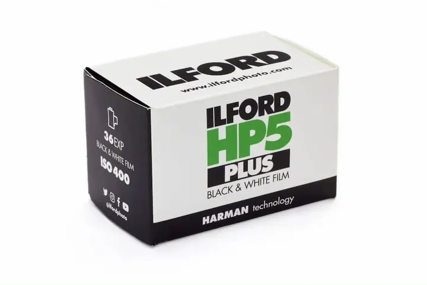
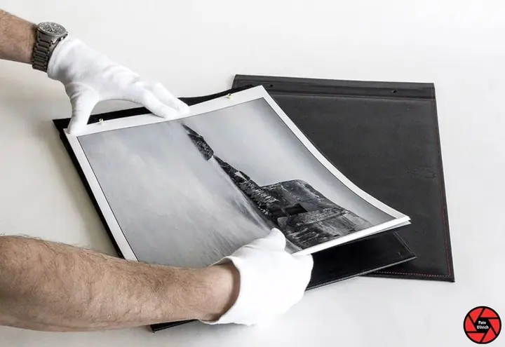
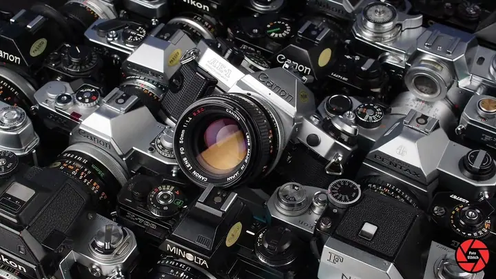
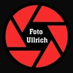

Jmenuji se Jiří Ullrich a v roce 1991 jsem v Jičíně založil rodinnou firmu Foto Ullrich

. V našem ateliéru fotografujeme rodiny, děti i miminka, fotky tiskneme ve vlastním digitálním minilabu

a staráme se i o vaše fotoaparáty, digitální i analogové

.
1 314lidí sleduje mou práci na Instagramu
719příspěvků s fotkami a příběhy
(02) Co fotím
Focení, které má příběh
01
01 / 04
Tisk fotografií a digitální minilab
Fotografie tiskneme ve formátech od 9×13 do 20×30 nebo ve formátu, který si zvolíte, a také na plátno nebo velkoformátově na Epson. Přes online FotoSběrnu nám je pošlete z domova a objednávku vyřídíme do 24 hodin.
Firmám, školám a institucím pomůžeme vybrat foto a video techniku, která dává smysl technicky i ekonomicky. Navrhneme sestavy v různých cenových úrovních a vysvětlíme rozdíly mezi nimi.
V našem ateliéru fotografujeme rodinné fotografie, děti i miminka a obchodní portréty, věnujeme se i umělecké fotografii. Kostýmy, rekvizity a hračky vám zapůjčíme zdarma.
Fotíme svatby, reportáže, školní fotografie, fotky v přírodě, taneční i dobové fotografie. Fotíme také nemovitosti a architekturu a nabízíme letecké snímky.
Zavolejte nám, napište nebo se zastavte v prodejně na Palackého 62. Společně vybereme termín a typ focení.
2
Krok 2 z 4
Příprava
Poradíme vám, co si vzít s sebou, jak se připravit a co vás čeká. Kostýmy, rekvizity a hračky zapůjčíme zdarma.
3
Krok 3 z 4
Fotografování
Během focení je ateliér zavřený, takže máme klid jen pro vás. Fotíme rodiny, děti, miminka i obchodní portréty.
4
Krok 4 z 4
Výběr a tisk
Vybrané snímky vytiskneme ve vlastním minilabu ve formátu, který si zvolíte, nebo je připravíme na plátno, dřevo či jako fotodárek.
Fotografii se věnujeme od roku 1991.
(05) Za objektivem
Ahoj, jsem Jiří
Firmu Foto Ullrich jsem založil 25. 7. 1991. Jsme česká rodinná firma a sídlíme ve vlastním domě v centru Jičína. Od začátku se věnujeme fotografii v celé šíři: fotíme, tiskneme, prodáváme fototechniku a staráme se o její servis.
V ateliéru fotografujeme rodinné fotografie, děti, miminka i obchodní portréty. Když fotíme, ateliér zavíráme, aby nás nikdo nerušil a vy jste se cítili dobře. Kostýmy, rekvizity a hračky vám zapůjčíme zdarma a předem vám poradíme, co si vzít s sebou a jak se připravit.
Kromě focení u nás vyvoláte a vytisknete fotky, převedete staré videokazety, necháte zrekonstruovat staré fotografie nebo si vyzkoušíte analog. V podnikání se držím jednoduché filozofie: vysoká kvalita a spokojený zákazník.
01Firmu jsem založil v roce 1991
02Jsme česká rodinná firma
03Sídlíme v centru Jičína
04Čistíme i analogové fotoaparáty
05Fototechnice rozumíme přes 35 let

Jiří
Jiří Ullrich · Fotoateliér, fotoslužby a fototechnika
Nejjednodušeji přes naši online FotoSběrnu. Objednávku vyřídíme do 24 hodin. Tiskneme ve formátech 9×13, 10×15, 13×18, 15×20, 15×23, 18×24 a 20×30 nebo ve formátu, který si zvolíte.
Musím si do ateliéru přinést vlastní rekvizity?
Nemusíte. Kostýmy, rekvizity, hračky a další věci vám zapůjčíme zdarma. Předem vám rádi poradíme, co si vzít s sebou.
Převedete staré videokazety?
Ano. Záznamy z VHS, Mini DV, Hi8, 8mm i 16mm převedeme na DVD nebo na médium, které si zvolíte, třeba na paměťovou kartu nebo flashdisk.
Kdy máte otevřeno?
Od pondělí do pátku 9:00–12:00 a 13:00–17:00, v sobotu 9:00–12:00. V neděli máme zavřeno.
(07) Kontakt
Napište nám, rádi poradíme
Napište pár vět o tom, co si představujete, a termín, který se vám hodí.